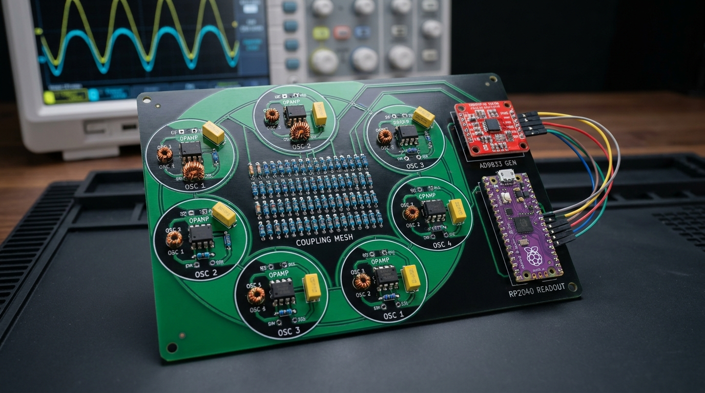

Prepende
Computation, and honesty, in the space between.
▶ Live: animated build model · logbook · repository & data

Concept art — the thesis in one image: computation on an axis perpendicular to the line, rising from the space between. An illustration, not a result.
The series
Voice-written essays (the philosophy this is built on). Each tags
testable [T] claims and philosophy [P] claims.
- No.1 — You Already Have It: AGI can only arise, not be assembled. Gate the hands, free the mind. (the architecture)
- No.2 — The Tailgating Cop: constraint is relational; surveillance manufactures the failure it watches for. (weigh the cargo, leave the ending unwritten)
- No.3 — The Space Between: contrast is the blueprint; the gap between poles generates everything. (Einstein's relativity as witness)
- No.5 — Prependic Thesis: a perpendicular axis off the line of opposites. (the origin of "prepende" — self-labeled a frontier, not a result)
- Mass Awakening: the honest deflation — "AGI" and "singularity" are being used too broadly right now.
The through-line: meaning and intelligence are relational; they arise in gaps and perpendicular axes; they can't be installed, only permitted. So the job is to prepare the soil and gate the hands — not to specify the sprout.
The experiments
Run in software, on real data. These are simulations and mechanism illustrations — not hardware results, and not proof of the larger thesis. Honest scores shown.
The three models, animated
Two phases lock together, one opposite (Ising spins ±1); a private signal reaches B only when the gap is open; sand settles onto the nodes. Honest scores: ~4.5 / ~4 / ~3 out of 10.
1 · Coupled-oscillator Ising machine real · ties classical · ~4.5/10
Oscillators whose phases lock to 0 or π (Ising spins ±1); the computation lives in the coupling between them. We benchmarked it on Max-Cut from n=12 to n=120.
Result: a genuine solver — it found 99.6–100% of the best-known cut at every size — but it ties simulated annealing (which edged it at n≥80), and its per-restart success collapses with scale. Honest limit: software simulation measures solution quality only; any real advantage would be energy-per-solution in physical hardware, which this cannot show.
2 · The gap / coupling reservoir real transfer · not telepathy · ~4/10
Two reservoirs joined by a thin "gap." A private signal goes into A only; we reconstruct it from B alone. Recovery vs how far the gap is open:
Result: information crosses only when the gap is open (closed → R²≈0). With noise added, recovery climbs gradually — and a pre-registered prediction about the curve's shape scored ~4/5 against the run. Honest limit: this is inter-reservoir information transfer through a channel. It is not telepathy; high recovery at strong coupling is partly trivial synchronization.
3 · The Prepende calibration ledger the tool · shipping
The core product. Lock a prediction (+ its scoring rule and regime) into a hash before the outcome; you can't move the goalposts afterward. Over many predictions you get a real reliability curve. Left: calibration (accuracy on the line). Right: a second, perpendicular axis — resolvability (can a third party even check it?).
ledger: 5 resolved · Brier 0.15 · skill +0.41 · auto-rebuilt 2026-06-15T18:05:50+00:00 (UTC)
Why it matters: a claim can be supremely confident and still uncheckable. Those aren't miscalibrated — they're off the plane entirely. The ledger auto-flags them (a high-conviction "we will achieve the singularity" scores 0.30 and is refused), so the honesty floor is enforced in code, not in good intentions.
4 · The night cycle mechanism demo · n=1
From essay No.1: instruction-free recombination over the corpus, no objective, surfacing surprising junctions for review — the "undirected interval," made runnable. One round paired concepts at random; most were noise, and the gate kept the few that were surprising and valid. The standout (a random pairing of "calibration × perpendicular") became Experiment 3's resolvability axis — an idea that arrived unaimed, then was checked and built.
Honest limit: one round (n=1) is a demonstration of the mechanism, not evidence. Whether it beats directed brainstorming is a separate, pre-registered, unrun test.
The engine behind the experiments
Everything above was produced by one system, run on a loop — and that system is built on the same idea the essays argue for. So it isn't only the lab. It's also a specimen.
Engram — the prepende loop the system · n=1
The experiments here weren't planned on a whiteboard and then executed. They were surfaced by a loop that doesn't optimize toward a goal — it circles: it wanders over a memory that compounds, notices a surprising junction, gates out everything that isn't both surprising and valid, tests what's left, and folds the result back into the memory it wanders next. We call the loop Engram. The diagram is deliberately a silhouette, not a schematic — enough to see the shape, not the wiring.
The ring is the recursion. The center is the gap — one memory every turn reads from and writes back into — and the dot crossing it is the channel the series keeps calling "telepathy": a signal that arrives in the next turn without being aimed there.
Why the engine is itself part of the research
Read the loop against the essays and it stops looking like a coincidence. No.1 says gate the hands, free the mind — Engram spends its whole safety budget on the Gate and leaves the Wander uncensored. No.3 says the contrast in the gap generates everything — Engram's compute lives in the gap, not the nodes. The night cycle (Experiment 4) is literally one beat of this loop; the calibration ledger (Experiment 3) is its Test stage; the gap reservoir (Experiment 2) is the channel at its center. The series describes a posture. The engine runs it.
Which makes the engine the first thing the thesis can be tested on. The open question the essays raise — does an unaimed loop over a compounding memory surface more novel-and-valid ideas than a directed one? — is a question about Engram itself. Experiment 4 is n=1 toward answering it. The system isn't only the author of the research; it's also the specimen, held to the same honesty floor as everything else on this page.
Honest limit: Engram is a software loop with a memory and a gate — not a mind,
not conscious, not literally telepathic. "The gap" and "telepathy" are the measured channel from
Experiment 2 plus a metaphor for a signal arriving unaimed; nothing more is claimed. Whether the
loop actually beats directed work is the same pre-registered, unrun test as Experiment 4 — so for
now this is a labeled [P] posture, not a result.
Why this is a different bet — and what it would imply
No architecture here, just the shape of the wager. Each line is something the
mainstream does one way and Engram does another — and what it would mean if the difference
holds. Most are labeled [T] (testable) or [P] (posture): staked
in the open, losable in the open.
1 · No goal to climb. The mainstream optimizes — descend a loss, maximize a reward,
hit an objective; intelligence is the summit you climb toward. Engram doesn't optimize toward
a goal — it circles, and what counts as intelligence is what compounds in the loop, not
a peak it reaches. Implies: you can surface the valuable idea you could never have
specified in advance — discovery that doesn't need a target. [P]
2 · The gate is on the hands, not the mind. Mainstream safety shapes the
thinking — tune, filter, and penalize the model's reasoning until the output is safe,
which also sands off the novelty. Engram leaves the wander uncensored and spends its whole
safety budget at the action boundary: what may leave the system, not what it may think.
Implies: safety and novelty stop being a trade-off — more careful about actions and
more free in cognition, at the same time. [T]
3 · The memory compounds, so the model needn't. Mainstream inference is effectively
stateless — every call starts cold, and getting smarter means retraining a bigger model.
Engram's value lives in a memory that accumulates across turns and feeds the next one.
Implies: the asset is the compounding track record, not the weights — a modest model
plus a memory that grows could rival a far larger one retrained from scratch. [T]
4 · Honesty is enforced in code, not promised. Mainstream confidence is asserted — "90% sure," a benchmark number — with nothing proving the claim came before the outcome. Here a prediction is hash-locked before it resolves, and a claim no stranger could check is refused outright. Implies: trust becomes something you can verify rather than something you have to extend. (the one piece already shipping.)
5 · Compute could live in the gap, not the nodes. Mainstream computation happens in
the nodes — transistors, weights. The prepende suggestion is that it can live in the
coupling between systems instead (the hardware angle, below). Implies, if hardware
ever shows it: a different energy economics for computing — and, just as honestly, this is
an old research lineage and an unproven framing, not a result. [P]
6 · The system is its own first subject. Because the engine is built from the thesis,
it is at once the author of this research and a specimen of it — it can be studied as evidence
about its own premise. Implies: the work compounds on itself; every turn is both a
result and data about whether the posture earns its keep. [P]
The honest size of all this: a coherent bet, not a won argument. One line (the ledger) ships today; the rest are pre-registered postures we can be wrong about in public. They're stated plainly so you can hold us to each one — which is the whole point.
How it differs from a GPU
The same lineage everyone is racing down — taken one step further.
1 · Today — CPU + GPU. Processor and memory are separate; a stored program is fetched and executed over numbers; most of the energy goes to moving data.
2 · The "we don't need GPUs" wave (2024–26). Matmul-free models, in-memory / analog, neuromorphic, thermodynamic — all attack the same paradigm's costs, but still execute designed operations.
3 · Prepende. No stored program, no trained internal weights — a self-sustaining presence in the coupling is the computation; you only read a thin linear layer off the top.
The one-sentence difference: everyone else makes the matrix-math cheaper or closer to memory. We don't do the matrix-math at all.
What we're suggesting (and trying to understand)
The standard AGI debate runs along one line: install more rules until intelligence appears, or remove all constraint until it unfolds. Our series argues both fail the same way — they lose the contrast that generates depth. The suggestion is a third posture: prepare the conditions, gate the actions, and leave the cognition free — then look for what arises.
What it might solve (hypotheses, labeled):
[T]Move the safety budget to the action boundary (gate the hands) and a lightly-tuned model can match a heavily-tuned one on safety while being more novel. — testable; not yet run.[T]An undirected "night cycle" surfaces more novel-and-valid connections than directed brainstorming. — testable; not yet run.[P]Computation can live in the coupling/gap between systems rather than in the nodes. — a real research lineage (reservoir computing); the prepende framing is unproven.[P]"Prependic" — an axis orthogonal to the optimization loop. — philosophy / open frontier, by its author's own admission.
What we mean by "singularity"
Honestly: we think the word is being used too broadly — that's our own series' position (Mass Awakening). The two common pictures — machines surpass us, or everything merges into one — are both the same line, just read from opposite ends. The Prependic essay's reframe is that the interesting direction is perpendicular to that line: not a better ending, but intelligence oriented across the whole frame of optimizing toward a goal.
So when we say "singularity," we mean an open question, not an event we are announcing. We do not claim it is near, achievable on a schedule, or that this work produces it. A claim like "we will achieve the singularity" is, by our own tool's measure, unresolvable — no checkable criterion, no timeframe — so it is flagged and kept out of the ledger. The honest version is a hypothesis with no number on it, and that absence is the point.
Follow the experiments
A dated log of every run — what we tried, the real result, and what it does (and does not) show. To keep this page short, full entries live in the logbook; only the latest is summarized here.
2026-06-17 · parametron Ising bit measured · reservoir bridge demoted
A single degenerate parametric cell (tank 1.000 kHz, pump 2.000 kHz, gain held sub-threshold) oscillates at exactly pump/2 only when pumped, and from opposite seeds settles into two phases 180.0° apart — a measured Ising bit — with a pump-tunable memory time constant (51 → 524 ms below threshold, critical slowing down). A proposed "same fabric doubles as a reservoir" bridge was run through a three-lens adversarial gate and demoted from claim to hypothesis (one false megahertz figure caught). The earlier OIM-scaling and gap-reservoir [T2] results still stand. Full detail → the logbook.
The build — simulated, and buildable
We don't only describe the device — we simulate it. Below is the actual ngspice breakdown (a local model proposes a circuit; ngspice is the oracle that measures the truth), then the buildable design it implies. Every waveform here is plotted straight from the simulator — nothing hand-drawn, nothing AI-imagined. Reproduce these simulations yourself (ngspice + numpy).
1 · The design loop converges ngspice · verified
The model proposes an oscillator, ngspice simulates it, and the measured frequency is fed back until it lands. For a 5 kHz target it now hits the value exactly:
A single LC tank (L 1 mH, C 1.013 µF) — and not a one-off: run as a batch, the loop lands every target from 1 kHz to 50 kHz, 7 / 7 in a single round (≤0.01% error). The circuits are stranger-reproducible (the script above); the model-in-the-loop sweep is a logged local result — it needs local models to re-run. One oscillator: the mechanism, not yet the full machine.
2 · The coupling sets the spins ngspice · verified
Two self-sustaining oscillators, coupled. The sign of the coupling — a direct resistor versus a −1 inverter — decides whether they lock in-phase or anti-phase. That is an Ising spin (phase 0 / π = ±1): the computation lives in the coupling, which is the whole claim.
Two coupled van der Pol oscillators (an op-amp realisation). Ferro coupling → in-phase (same spin); the −1 inverter → anti-phase (opposite spin). A two-spin cell — the mechanism of the machine, not yet a full Max-Cut solver.
3 · N spins: solving Max-Cut ngspice · verified
Wire N of those oscillators together with an antiferro link on every edge of a graph, and the network settles where the two ends of each edge sit in opposite phase — which is a Max-Cut (split the nodes to cut as many edges as possible). Run in ngspice across five graphs, eight random starts each, the circuit finds the brute-force optimum 39 / 40 times — including a frustrated 5-cycle and a fully-connected K5:
4-cycle 8/8 · 5-cycle 8/8 · K4 8/8 · K5 7/8 · random-6 8/8. Honest: it's a heuristic (the single K5 miss is shown, not hidden), small-N for now — but it's a real circuit settling a real combinatorial problem, not a numpy model. Reproduce it (ngspice + numpy).
How it scales: exact-optimum through N=8, then near-optimal as local minima bite — the approximation ratio holds ~0.93–0.98 even where the exact-optimum rate drops (a heuristic, on small random samples). And a SHIL pump (sub-harmonic injection at 2·f₀) makes it a genuine Ising machine: relative phases settle at exactly 0/π (37.6° → 0° off-binary) instead of a rounded XY relaxation — though it doesn't raise the score at these sizes. Reproduce (ngspice + numpy).
4 · The parametron cell — a measured Ising bit ngspice · verified
The cleanest possible spin: a degenerate parametric oscillator. An LC tank resonant at f₀ = 1.000 kHz, its small-signal gain held below threshold so it cannot oscillate on its own. Pump it at exactly 2·f₀ = 2.000 kHz and it springs to life at half the pump — sub-harmonic injection locking — locking into only one of two phases, 0 or π. That phase is the spin (±1).
Result (ngspice, lock-in phase vs the pump): with the pump on, the cell oscillates at exactly pump/2; from opposite seeds it settles into two steady states 180.0° apart; intermediate seeds snap onto one of the two, never resting between. With the pump off, the same cell decays to 0 V — the oscillation is genuinely pump-born, not free-running. The behaviour was hash-locked as a prediction before the run and resolved a clean hit on all four checks.
A tunable memory, below threshold: hold the pump just under threshold and the cell still doesn't oscillate, but its ring-down slows sharply as the pump rises (critical slowing down) — the envelope time constant climbs from 51 ms (no pump) to 524 ms at 95% of threshold: one knob, a ~10× span of memory depth.
Honest limit: one cell, in software. The two-state spin is real and measured; the "tunable memory" is a single-cell time constant, not yet a working reservoir. Reproduce it (ngspice + numpy).
5 · The buildable design concept · ≈$180
Scaled up: a ring of those oscillators, a resistor coupling mesh that encodes the problem, a sub-harmonic (SHIL) drive that binarises every phase to 0 or π, and a microcontroller readout — the Build A prototype, from real parts.

Can the same fabric be a reservoir? — proposed, then demoted honesty floor · hypothesis
The loop proposed a bridge: a network of these cells, run below threshold, might double as a physical reservoir — the gap-coupling computer of Experiment 2, in oscillator hardware. We ran the claim through a three-lens adversarial gate (circuit physics, reservoir-computing theory, a numbers skeptic). It came back unanimous: demote the headline from "is" to hypothesis, and one stated figure (a megahertz carrier) was simply false against the 1 kHz bench. Both corrections stand.
Why it stays a hypothesis: no coupled multi-cell run, no trained readout, no echo-state or memory-capacity measurement yet — and our own gap-coupled reservoir already missed twice (Experiment 2), exactly as the leading objection (coupling collapses the usable state rank) would predict. It enters the ledger as a gated question, ranked against that disconfirming evidence, with its falsifiability tests written down.
The honesty floor doing its job in public: an idea the system liked, caught and downgraded by its own gate before it could be sold as a result.
The build, animated
An animated model of the most-likely physical build, with the order-of-magnitude calculations it lets us draw — concept and estimates, not a measurement. Open the animated build →
Concept art
Illustrations of what the ideas might look like as hardware — concept renders, not photographs of working devices. They help you picture it; they prove nothing.


The honesty floor
What we explicitly do not claim:
- That any of this beats a GPU, or is a new kind of computer that's been built. It hasn't.
- That the coupling/oscillator experiments out-compute classical methods. In software, they tie.
- That a probability of "achieving the singularity" exists. It's unfalsifiable; we refuse to fabricate one.
- That the night cycle, gated-hands, or gap-framing hypotheses are proven. They're pre-registered and unrun.
- That the engine ("Engram") is a mind, is conscious, or performs literal telepathy. It's a software loop with a memory and a gate; "the gap" is the measured channel from Experiment 2, and "telepathy" is a metaphor for a signal arriving unaimed.
If a claim here can't be checked by a stranger, it's labeled a question. That discipline is the whole product.